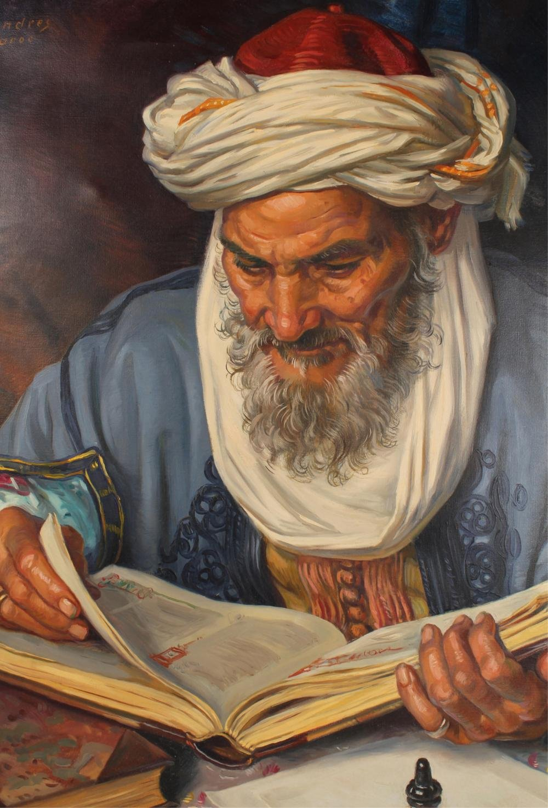

Welcome to the Mathematical World!
Al-Sijzi
Innovative Mathematician and Astronomer of the Islamic Golden Age
Al-Sijzi (c. 945 – c. 1020 CE), full name Abu Sa'id Ahmad ibn Muhammad ibn 'Abd al-Jalil al-Sijzi, was a Persian mathematician and astronomer known for his original contributions to geometry, planetary theory, and astronomical instruments. He was born in Sijistan (present-day Sistan region spanning eastern Iran and southwestern Afghanistan) and was active in major scientific centers such as Baghdad and Shiraz.
In mathematics, Al-Sijzi made significant progress in geometry. He explored curves beyond the classical Greek approach, notably working on the epicycloid and conic sections. One of his most remarkable contributions was his proposed mechanical solution to angle trisection — a problem considered impossible using only compass and straightedge. He designed an ingenious geometric instrument called the “Zahrawi’s compasses” to aid this process, reflecting his deep understanding of practical geometry and mathematical instruments.
Al-Sijzi was among the first to explicitly consider the possibility that the Earth rotates on its axis. While this idea was not widely accepted in his time, he defended it scientifically and built astronomical models based on a rotating Earth — a perspective that predated Copernican thought by several centuries.
He also invented an astronomical device known as the al-zūraqī astrolabe, which assumed a rotating Earth, differing from the traditional Ptolemaic astrolabes. This bold theoretical innovation illustrates his departure from geocentric orthodoxy and shows how Islamic scholars like Al-Sijzi were engaging in conceptual experimentation far ahead of their era.
Al-Sijzi authored works on spherical geometry, trigonometry, and planetary motions. He criticized and corrected parts of Ptolemaic astronomy and expanded upon Greek and Indian astronomical traditions, often through precise observational and mathematical techniques.
- Proposed a rotating Earth centuries before Copernicus
- Designed instruments for solving angle trisection geometrically
- Developed the al-zūraqī astrolabe based on Earth's rotation
- Advanced conic sections and studied epicycloidal motion
Al-Sijzi’s combination of theoretical creativity and mechanical ingenuity highlights his importance in the history of science. His willingness to challenge prevailing cosmological ideas reflects the intellectual boldness of Islamic scientific culture during its golden age.